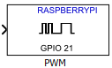

Pulse width modulation of digital output pin
Use pulse-width modulation (PWM) to vary the power output of a digital output pin.
The block input value sets the percentage of time that the digital square-wave is on within a specific period. This time percentage is called duty cycle.
The block input, In, accepts a range of values from
0 to 1 (from 0% to 100% of the duty
cycle). The data type of the input value is a double.
For example:
The maximum input value, 1, sets the duty cycle to
100%, or full power.
The minimum input value, 0, sets the duty cycle to
0%, or no power.
An intermediate input value, such as 0.333, sets
the duty cycle to 33.3%, or 1/3 power.
Out of range input values, such as -0.2 or
1.2, output minimum or maximum power.
The frequency of the PWM signal establishes the period of each PWM signal. For example, if the frequency is 3000 Hz, the period of each signal is approximately 333.33 microseconds. At 3000 Hz, setting the input value to 33.3% turns the digital pulse on for 111.11 microseconds, and then off for 222.22 microseconds.
Changing the polarity of the PWM signal inverts the digital signal. With an
input value of 33.3%, setting the polarity to
Negative turns the digital pulse off for 111.11
microseconds, and then on for the remaining 222.22 microseconds.
The block input inherits the data type of the upstream block, and internally converts it to double.
During simulations without the hardware, this block does nothing. See Block Produces Zeros or Does Nothing in Simulation (Simulink).
Select the digital output pin.
Click View pin map to locate the pin.
Do not specify the same pin more than once within a given model.
Set the frequency of the PWM signal.
By default, this value is 500 Hz.